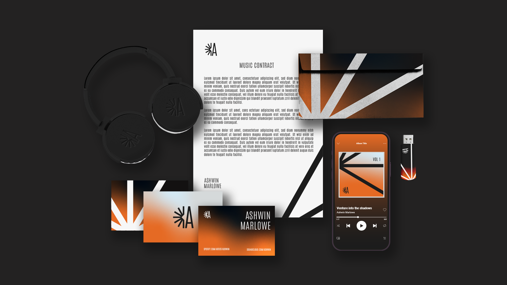
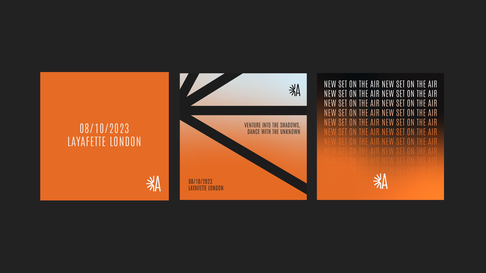
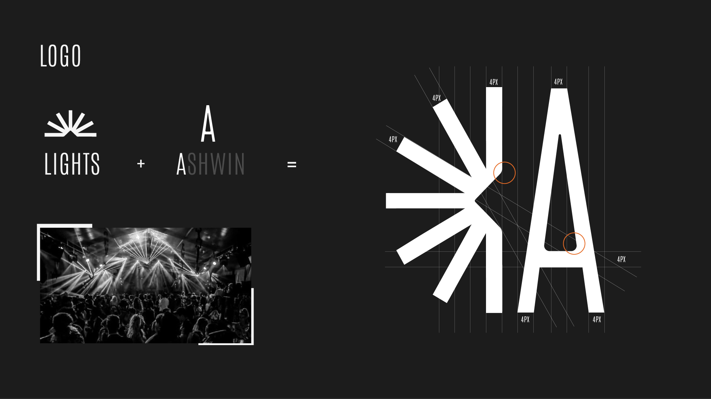
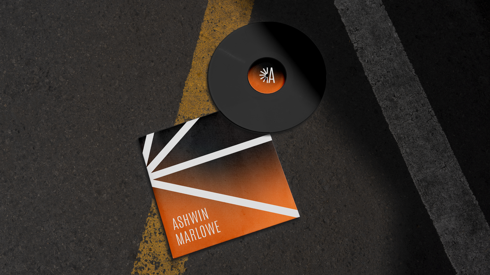
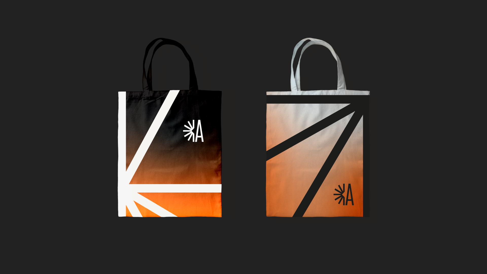
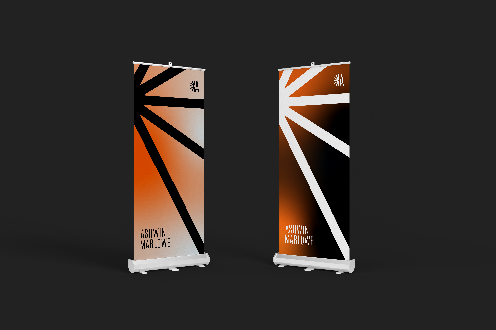

Ashwin
An identity system that gives the artist a clear, ownable presence. I built the branding and applied it across digital and print.

Ashwin, a techno DJ thriving in the underground electronic music scene, to develop his personal brand.
The self brand is centered around themes of darkness, mystery, and euphoria, reflecting Ashwin's reputation for crafting mind-bending audio-visual experiences that blend cutting-edge techno beats with haunting melodies and hypnotic rhythms.
I developed the core identity and then applied it across the formats where the artist shows up.
Finding the right palette and type.
Choosing the colour palette was a crucial part of shaping the brand's identity. I went with a gradient of fiery orange, deep dark grey and light grey: orange for the vibrant energy of Ashwin's music, dark grey for a sense of darkness, and light grey for contrast.
I paired it with typography that feels modern and sophisticated and works across every medium, so the whole identity stays cohesive and engaging for his audience.

A logo built from light.
The idea came from the electrifying lights at Ashwin's performances. The logo captures that fusion of music and visuals, movement, rhythm and the pulsing energy that defines his DJ sets.
To make it personal, I subtly merged Ashwin's initial “A” with the dynamic lights. At its core is a light motif that grows into a dynamic pattern, used as a signature element across all the branding so everything stays recognisable and coherent.




